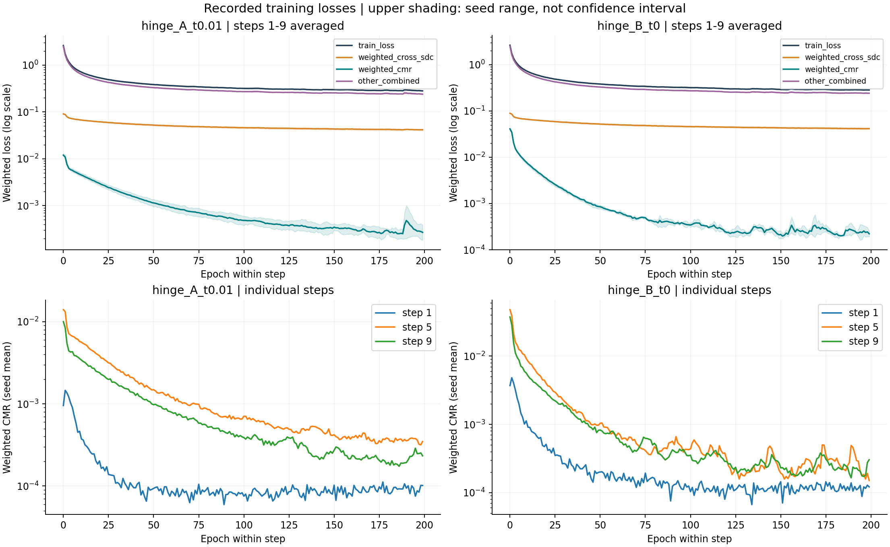
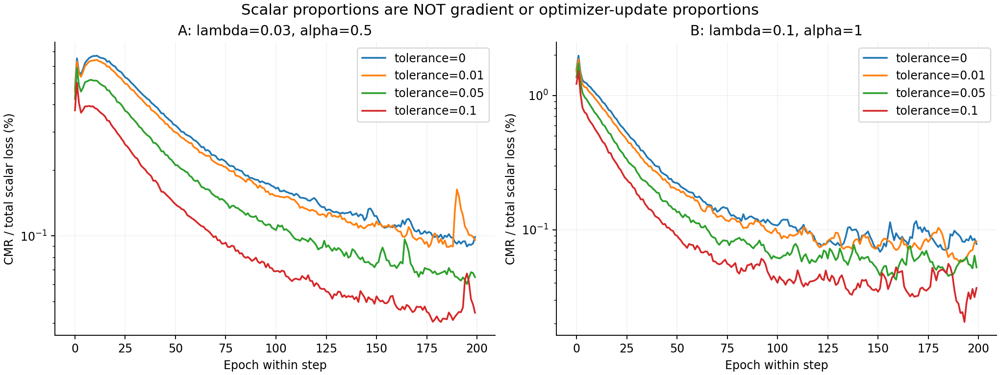

来源是 24 个运行的 epoch_summary.csv，共 48,000 条 epoch 记录。主图和统计排除只训练 CE 的 step0，包含 43,200 条增量训练记录。每个 epoch 数值是训练过程中各 batch loss 的平均，并非在 epoch 末或最佳 checkpoint 上重算。每个配置含 3 个 seed、9 个增量阶段、200 个 epoch。
已逐行校验 weighted_cmr = lambda × cmr，以及 weighted_cross_sdc = 0.1 × cross_sdc_i。CrossSDC-C 原始值虽然约为 2–3，此批实验的加权贡献为零。other_combined = total − weighted_cross_sdc − weighted_cmr，是 CE、KD、当前模态对比项与注意力蒸馏的合计；原数据不能将其继续拆开。CMR 原始值已包含类别权重和两个方向的平均，只是尚未乘全局 lambda。


阶段定义：first10 是各增量阶段 epoch 0–9；last20 是 epoch 180–199；all 是 0–199。表中占比是 sum(weighted CMR)/sum(total)，不是先算每个 epoch 百分比再平均。CSV 另含 epoch 占比中位数和各 loss 的 10%/90% 分位数。
| config | phase | train_loss_mean | weighted_cross_sdc_mean | cmr_mean | weighted_cmr_mean | other_combined_mean | cmr_share_pct_ratio_of_sums |
|---|---|---|---|---|---|---|---|
| hinge_A_t0.01 | all | 0.392408 | 0.0493452 | 0.0390271 | 0.00117081 | 0.341892 | 0.298366 |
| hinge_A_t0.01 | first10 | 1.20487 | 0.0751857 | 0.227506 | 0.00682519 | 1.12286 | 0.566467 |
| hinge_A_t0.01 | last20 | 0.286569 | 0.0418716 | 0.0103034 | 0.000309103 | 0.244388 | 0.107863 |
| hinge_B_t0 | all | 0.391865 | 0.0490648 | 0.0165263 | 0.00165263 | 0.341148 | 0.421733 |
| hinge_B_t0 | first10 | 1.21536 | 0.0731652 | 0.172582 | 0.0172582 | 1.12493 | 1.42001 |
| hinge_B_t0 | last20 | 0.285555 | 0.0416957 | 0.00237027 | 0.000237027 | 0.243622 | 0.0830057 |
A 与 B 同时改变 lambda 和 alpha，不是 lambda 单变量实验。模型训练后的 CMR 值本身也会随约束改变，因此 lambda 增加 3.33 倍不意味着训练完成后 weighted_cmr 必然增加 3.33 倍。即使标量占比低，也不能据此判定梯度或优化作用可忽略。
解释 lambda 应同时看：原始 loss、加权 loss、加权梯度范数、CMR 与其他目标梯度的夹角，以及旧/新类表现。梯度是反向传播信号，也不是 Adam 实际更新比例；Adam 状态与 weight decay 还会影响最终更新。Direct 的 loss 可以为负，不能把 signed loss 比值当组成百分比。
只有最佳 checkpoint 无法恢复历史全程。带输入特征、教师、回放样本与原型可做清楚标记的固定 probe，比较同一状态下不同 lambda 的瞬时效果；不能把这种反事实测量当作另一个 lambda 的训练轨迹。best_epochs.csv 是验证集首次达到最大值的 epoch，匹配训练的严格大于更新规则。